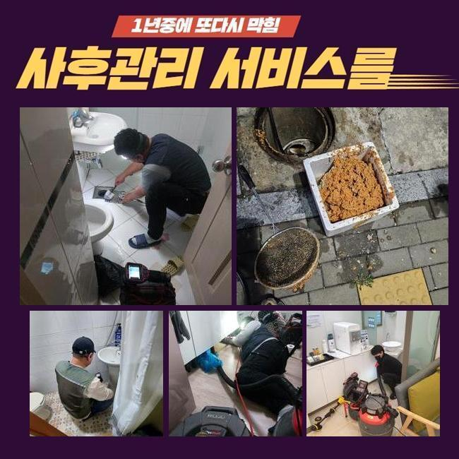
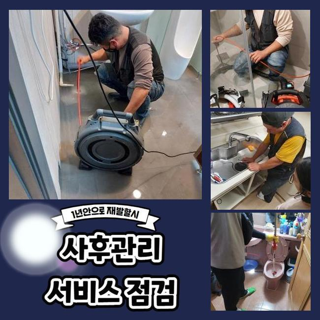
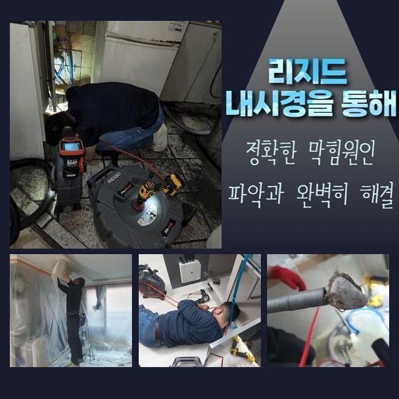
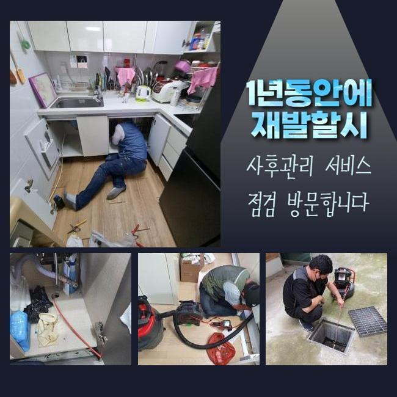
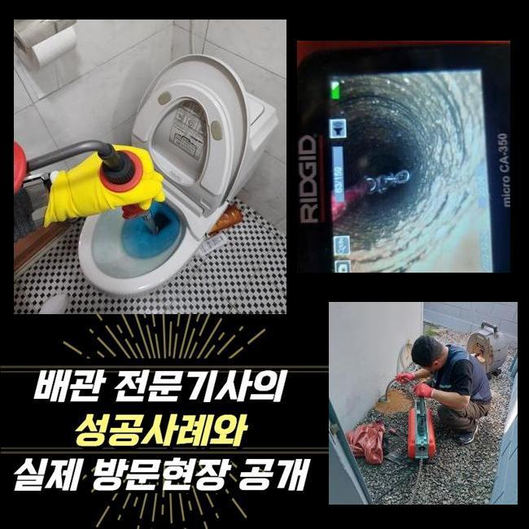
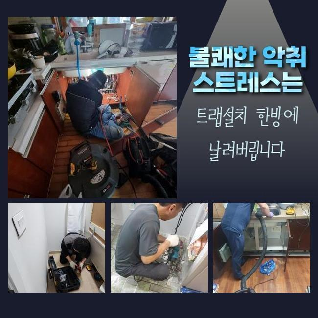

🏠 일산 대화동화장실뚫음 법곳동 배관뚫기 배관전문
용인 하수구막힘 전문 시공 후기

📋 작업 개요
- 위치: 용인
- 서비스 유형: 하수구막힘, 배관막힘, 뚫는업체, 배관청소, 고압세척
- 작업 일시: 2025. 4. 3. 18:03
- 업체명: 하수구수사대 (010-5615-2118)
🔍 문제 상황
일산 대화동화장실뚫음 법곳동 배관뚫기 배관전문
금일엔 주택에 찾아뵈어 외부에 존재하는 하수도를 뚫었는데요
전문적인 기기를 이용하여 뒤탈없이 청소하기에 이르렀습니다
배수정체 증세들이 불거진것은 저번주에서부터 였다고 해요
배관의 경우 배수되면서 자연스럽게 잔여물질들이 흘러가는데 통로속에서 조금씩 침전되며 개별관로가 막히게됩니다
잔해의 퇴적량과 크기마저 크다면 심해지게될텐데요
모든 잔해물들은 용해되는것에는 제약이 존재합니다
이렇듯 통수불능의 증세가 생겨나면 스스로의 조치로서 해결이 보이지않는 장소가 많은데요
의뢰인분들이 자가조치로 일반적으로 시도하는건 클린용액이라던지 과탄산소다를 쓰는건데요
문제들이 생기고서 기간이 얼마 안되었을때 도전해볼 수 있는 방법이겠지만 외부라면 개선이 안됩니다
바깥에서 증세들이 야기된다면 직관적으로 해결하는게 힘들어 전문인의 해결방안을 고려하시는게 좋은데요

🔎 원인 분석
💡 전문가 진단: 정밀 진단 장비를 사용하여 슬러지의 고착 여부를 판명하고 타격/세척 작업을 실시했습니다.
전문인의 내방을 통해 해당 장소에서 어떻게 정체된건지 근원적인 원인들을 짚어내는건 물론이며 고객님차원에서의 조치들이 아닌 확실히 이물들을 제거하여 오래도록 하수관을 깨끗히 유지하게됩니다
이번 물이 안빠지는 또한 저희업체에선 이물제거에 최적화된 장치들을 활용하여 안정적으로 찌꺼기또한 제거시키고 깊숙한 지점까지 배수가 가능하도록 만들었습니다
안타깝게도 실외의 지점에서 심화된 양상이 나타났고 해결하는게 불가능해 내방을 문의하셨죠
저희들은 의뢰자분의 시간들이 괜찮다면 바로 내방하여 해당 장소에서 일련의 과정들을 들어갑니다
고객분의 전화를 받았더니 마당에서 문제가 생긴것으로 보였습니다
단독주택 외부에 존재하는 수채구멍이 막히게되어 우천상황에서는 솟구치는 상황으로 파악되었죠
특히 강수 상황 시 쓰레기들이나 외부유입물 등 이런저런 이물들이 빠지게됩니다
물청소 등을 할때 갑작스럽게 하수관으로 천천히 빠지는 현상들이 많아졌다고 합니다
처음엔 고객분은 시간들이 흐름에 따라 괜찮아 지겠지 하시고는 수습을 늦췄다고 하셨는데요
그런데 조치를 안한탓인지 연거푸 고이면서 진전이 없었다고 해요
그후에 며칠간의 답답하게 통수되는 현상을 보시고서 급히 뚫어야겠단 생각에 문의를 주신것이였죠

🔧 작업 과정
단독주택의 형태로서 이웃들에게 피해들을 끼친 경우는 아니였지만 자가적으로 관리책 실시가 이뤄져야했던 장소랍니다
즉각적인 내방이 가능한 데가 소수라 난처하셨는데 저희의경우 바로 가능했기에 작업요청이 이루어진것인데요
저희전문진들은 평일말고도 휴무에도 찾아가며 1년내내 청소하기에 문의 시 방문드려 이물제거에 몰두했어요
하수관은 좁기에 가시적으로 들여다보는것에는 제한이 있습니다
하수관에 내시경장치를 이용해 심층부 부근 위치에 이물들이 존재하는지 체크하죠
내시경장비로 쌓여진 잔해들을 어디서부터 없애주어야하는지 판단되면 효율적인 방식들을 선별해주는데요
우선 샤프트도구를 이용하고 집수라인 근방은 고압수청소를 운용키로 결론 지었어요
샤프트로 말씀드리면 몸체부분과 연결되어있는 선에 단단한 노커부품이 붙어있는데 이 노커부품이 벽면에 붙은 단단한 이물을 제거해주는 도구에요
전문가용 기기를 통해서 안정적으로 결함들을 풀어냈습니다
작업시에 혹시라도 처리하지 못할 시 단돈 10원도 청구드리지않는다 안내드렸습니다
저희들은 애초에 고객분이 알려주신 장소로 내방하는 경우 출장에 소요되는 비용들을 청구드리지않고 방문하므로 비용 관련 걱정을 내놓을 수 있게되고 뚫음이 불가하다면 금액은 발생치 않으니 편하게 맡겨보세요
작업 과정 중에 개선이 안된 상태로 철수하여 출장금액들을 받는 경우들은 절대 발생치않는다 약속합니다
방문드린 곳은 바깥쪽에 있던 곳들로서 모래와 같은것이 들어간 모습이였고 축적된 슬러지들과 엉키게되며 점성이 짙고 단단히 굳어졌습니다
딱딱하게 뭉치게되어 중심구간에서부터 1차 통수 공간을 확보했어요
흡착이 많이 진행된 터라 간소하게 수습되는건 아니었는데 깊은 지점들까지 제거해주어야 했기에 집수시설부터 고압수청소 기계를 이용해야되는 현상들이었습니다
고압세척기기들을 통해서 빈틈없이 세척이 요구되는 상태가었습니다
심층부를 확인해가며 깊숙한부분까지 작업을 이어갔지만 배수가 이뤄지는 상황들이 아니었습니다
왜냐하면 폐기물들과 슬러지들이 길목마다 심층부까지 누적되어 딱딱해진 형태로 변모해서인데요


✅ 작업 완료
샤프트도구가 닿을 수 없는 포인트로 고압수청소가 요구됐습니다
그후에 고압세척으로 기름을 제거시키며 깊숙히 자리잡은 이물들을 탈락시켜 청소했는데요
안정적으로 제거하니 점차 구멍들이 생기게되고 배수들이 이루어지게 되었고 안쪽과 이어진 지점들도 배출이 가능했습니다
이와같은 사안들을 고객분에게 안내드리고 작업들은 끝나게되었죠
재발하는 상황을 막기위하여 사용하실 때 지속적으로 관리책을 수행해보시고 만에하나 일년이 지나지않아 반복하여 골치아프게한다면 저희의 전문진들이 무상보증을 실시하고 있으니 염려마세요!



⚠️ 하수구 배관 막힘 예방 및 관리 가이드
- ✅ 머리카락, 비닐, 물티슈 등 물에 분해되지 않는 이물질은 하수구 유입을 절대 금지해 주세요.
- ✅ 하수구 거름망을 씌우고 모여진 이물질은 주기적으로 쓰레기통에 바로 비워주셔야 합니다.
- ✅ 배관 노후가 심할 경우 이물질이 더 쉽게 걸리므로 주기적인 배관 세척(고압세척 등)을 권장합니다.
- ✅ 작업 후 1년 이내 재발 시 하수구수사대에서 무상 A/S 보증 서비스를 제공합니다.
💡 핵심 정리
- 확실한 장비 작업(내시경 점검 및 샤프트 스케일링)으로 원인을 뿌리 뽑습니다.
- 작업 후 1년 이내에 동일한 부위 재발 시 100% 무상 A/S 서비스를 보장합니다.
- 서울 · 경기 · 인천 전 지역에 24시간 언제든 긴급 출동할 수 있도록 항시 대기 중입니다.
❓ 자주 묻는 질문 (FAQ)
🚨 용인 하수구막힘 문제로 고민이신가요?
정확한 원인 진단과 확실한 시공으로 재발 없는 해결을 약속드립니다.
24시간 긴급 출동 | 서울 · 경기 · 인천 전지역 | 1년 내 재발 시 무상 A/S